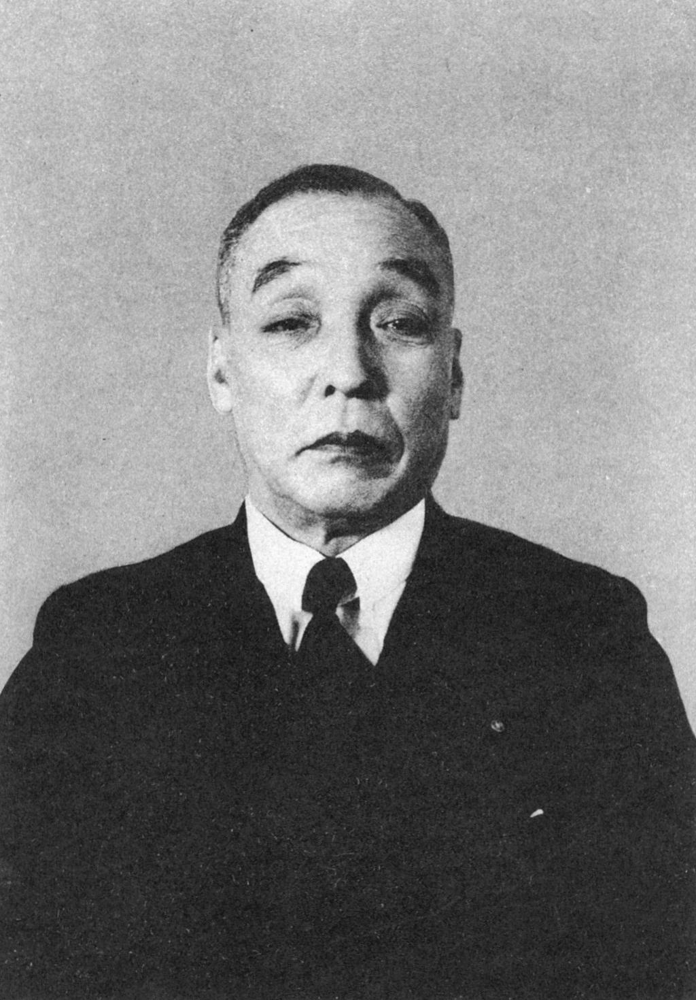
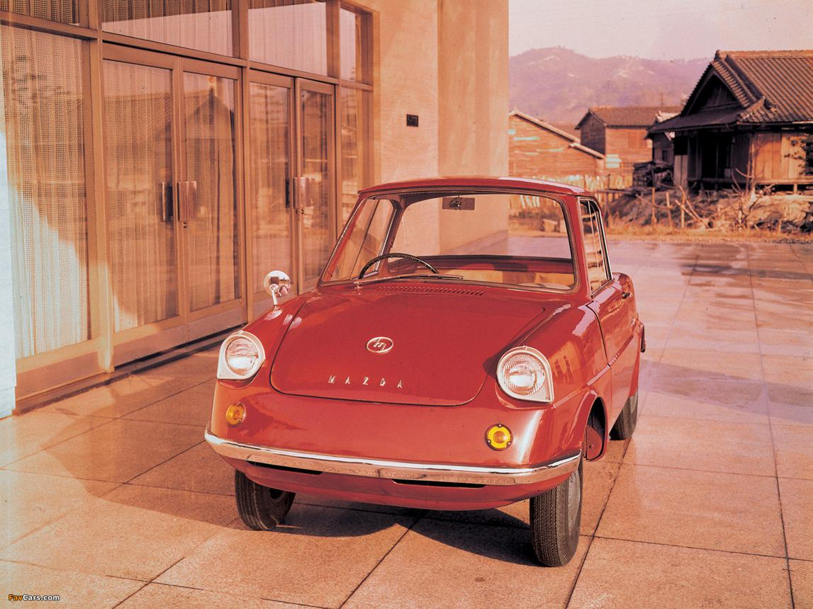
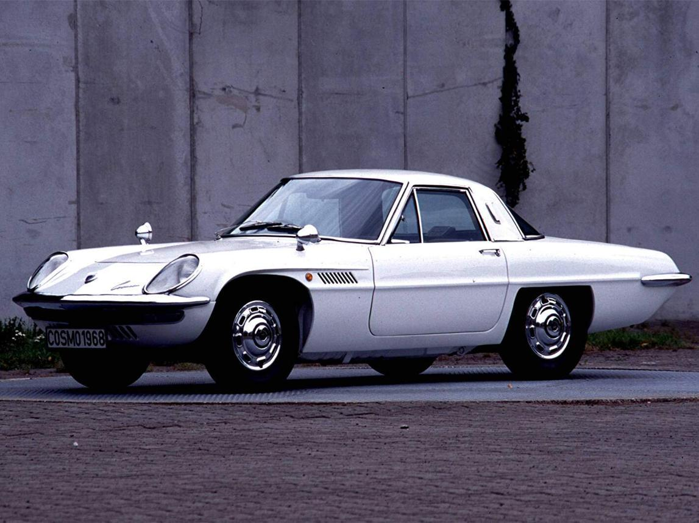
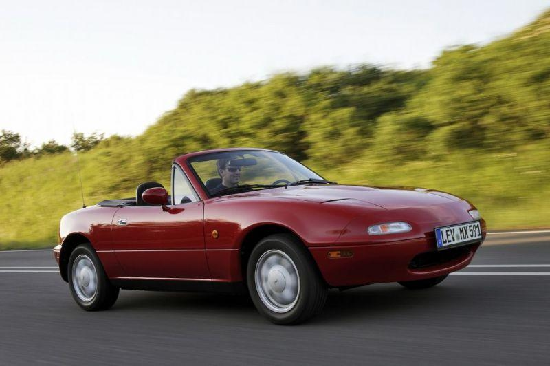
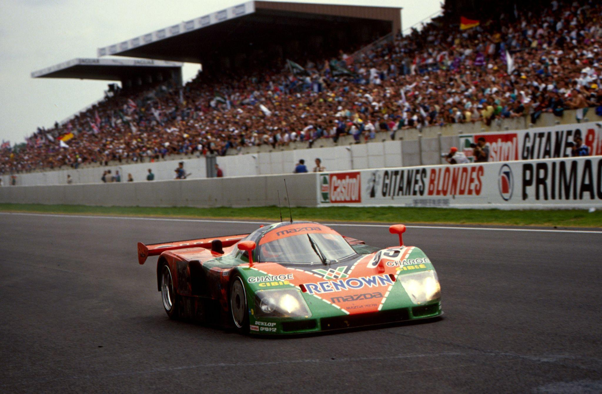
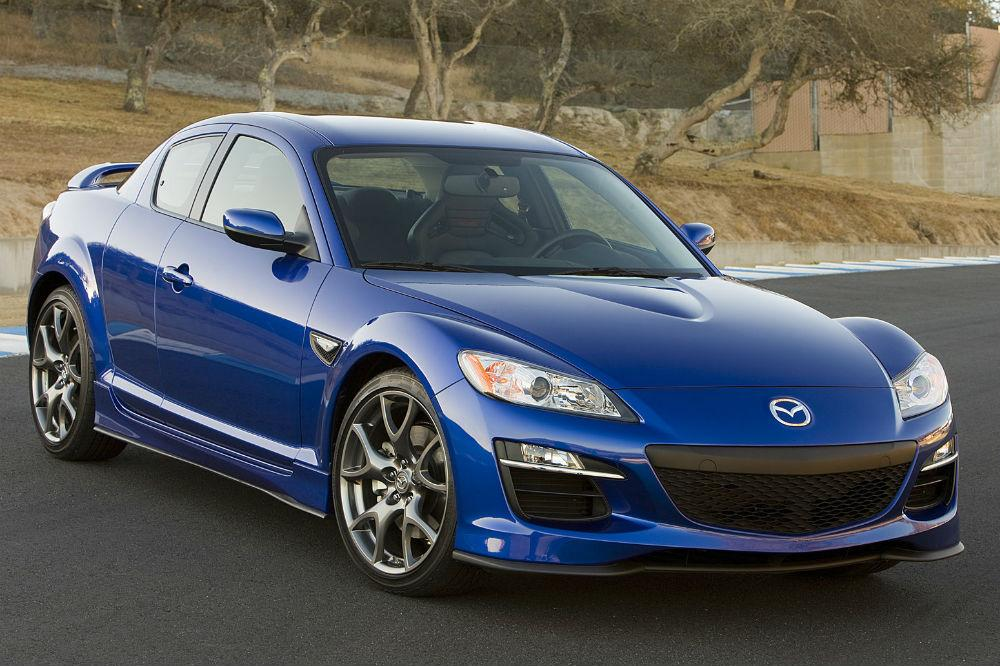
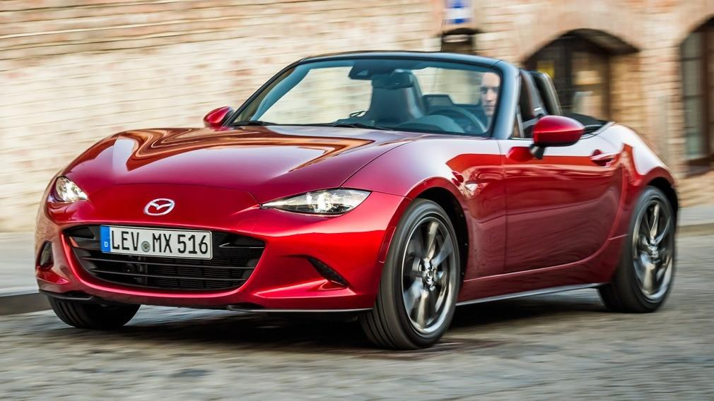
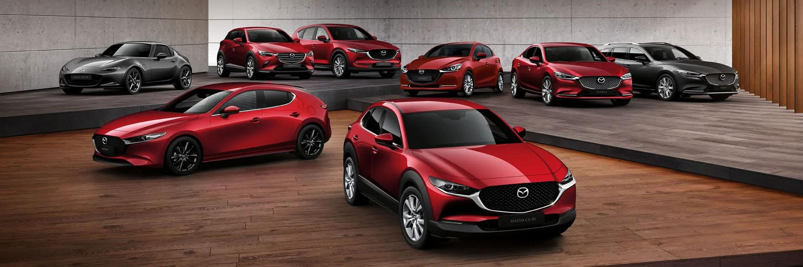
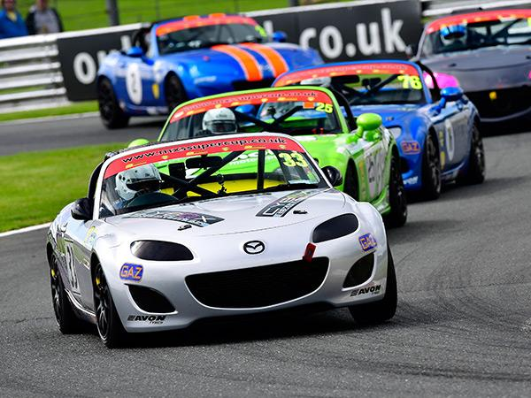
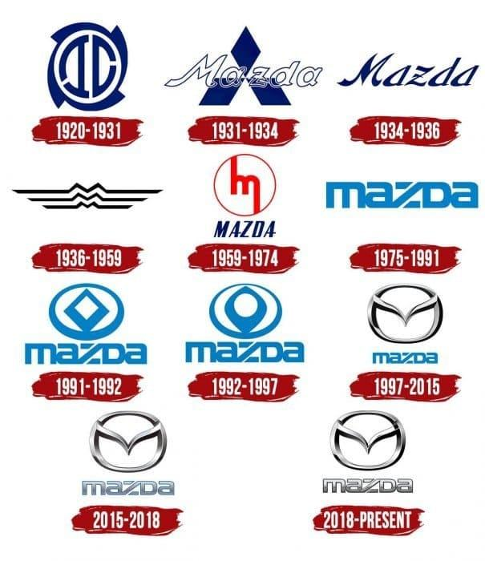

L'histoire de Mazda commence en 1920, lorsque l'entreprise Toyo Cork Kogyo est fondée à Hiroshima. À l'origine, elle fabrique des produits en liège. En 1921, Jujiro Matsuda prend la direction de l'entreprise. Il décide d'abandonner le liège pour se consacrer à la mécanique et aux machines industrielles. En 1931, Mazda construit son premier véhicule : le Mazda-Go, un petit triporteur motorisé destiné au transport de marchandises.

En 1960, Mazda lance sa première véritable voiture de tourisme : la R360 Coupé. Petite, économique et fiable, elle rencontre un grand succès au Japon. Deux ans plus tard, Mazda présente la Carol, qui contribue à faire connaître la marque auprès d'un public toujours plus large.

En 1967, Mazda révolutionne l'automobile en lançant la Cosmo Sport 110S, équipée d'un moteur rotatif Wankel. Contrairement aux moteurs classiques à pistons, ce moteur utilise un rotor triangulaire. Il est plus compact, plus léger et peut atteindre des régimes très élevés. Mazda devient le constructeur le plus célèbre pour cette technologie. En 1978, la marque lance la mythique RX-7, qui devient l'une des voitures sportives japonaises les plus populaires au monde.

Dans les années 1980, Mazda poursuit son développement à l'international. En 1989, elle présente la MX-5 (Miata), un petit roadster léger et amusant à conduire. La MX-5 connaît un succès exceptionnel et devient le roadster le plus vendu de l'histoire, avec plus d'un million d'exemplaires produits. Mazda commercialise également des modèles populaires comme la 323 et la 626.

En 1991, Mazda entre dans l'histoire du sport automobile. La Mazda 787B, équipée d'un moteur rotatif à quatre rotors, remporte les 24 Heures du Mans. Mazda devient ainsi :
Cette victoire est considérée comme l'un des plus grands exploits de l'automobile japonaise.

Au début des années 2000, Mazda poursuit son développement avec plusieurs modèles à succès :
La marque lance également la RX-8, dernière grande sportive équipée d'un moteur rotatif. Mazda développe ensuite la technologie Skyactiv, qui améliore les performances tout en réduisant la consommation de carburant.

Aujourd'hui, Mazda poursuit son développement avec des véhicules modernes et élégants. Parmi les modèles récents :
Mazda investit dans les moteurs hybrides, électriques et dans de nouvelles technologies, tout en conservant le plaisir de conduite qui fait sa réputation.

Depuis les années 2010, Mazda adopte la philosophie de design Kodo – Soul of Motion. Cette approche vise à donner l'impression que la voiture est en mouvement, même lorsqu'elle est à l'arrêt. Grâce à ce style élégant, Mazda reçoit de nombreux prix internationaux pour le design de ses véhicules.

Mazda participe à de nombreuses compétitions automobiles. Ses plus grands succès comprennent :
La compétition reste un laboratoire pour développer les technologies des voitures de série.

